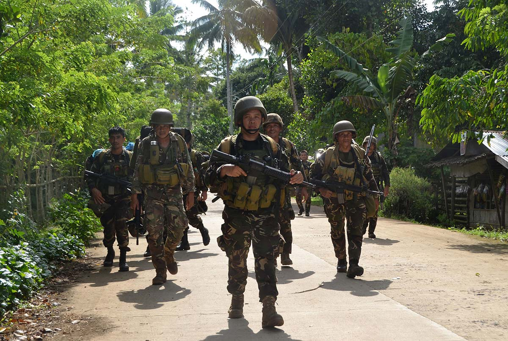

Europe
Europe is perhaps the most vulnerable area for foreign fighter fallout. Between 2011 and 2016, between 5,000 and 7,000 Europeans went to fight in Iraq and Syria.1 Fighters returning to Europe find the persecution and economic isolation of Muslims worse than when they left—trends that demographic shifts will likely exacerbate.
Negative public discourse about Islam’s role in European countries may have influenced Muslims’ desire to leave for Iraq and Syria. Recent work by analysts Chris Meserole and Will McCants to identify commonalities among individuals who traveled to Iraq and Syria revealed that the strongest correlation had to do with whether a fighter’s country of origin was Francophone.2 The authors posit “Francophone” may be a proxy for negative public discourse about the legality of Muslim dress in French-speaking nations.3 Immediately prior to the Syrian civil war, several European societies had intense debates about the legality of wearing Muslim garb like the hijab and burqa in public spaces, with France banning full-face veils in 2010 and Belgium following suit in July 2011.
The debate appears to have immediately preceded a wave of young Muslims leaving France for Iraq and Syria, especially in the wake of the Arab Spring.4 Meserole and McCants note French sociologist Agnès de Féo’s 2015 statement that “those who have left to go and fight in Syria say that this law is one of things that encouraged them. They saw it as a law against Islam. It had the effect of sending a message that Islam was not welcome in France.”5 Austria, Denmark, Germany, Italy, the Netherlands, Switzerland, and the United Kingdom have all applied bans on full-face veils.6 Though not directly correlated, an increase in hate crimes against migrants and refugees may also lead European Muslims to question their ability to assimilate into European societies.7
As European militaries began to assist U.S. military strikes and limit their citizens’ ability to travel to Iraq and Syria, Europe has become a more desirable target for returning fighters (recall Rachid Kassim’s preference for conducting attacks in dar ul kufr).8
Some foreign fighters have already carried out attacks in Europe. In November 2015 and March 2016, a cell of Belgian and French fighters conducted complex attacks in Paris and Brussels that left 160 dead. The Islamic State allegedly planned the attacks for a year, with facilitators casing potential targets and bringing fighters back to Belgium and France through pre-scouted routes.
Europe’s changing demography will likely exacerbate the existing social and economic isolation felt by some European Muslims.
Ten of the 24 attackers had either visited or tried to enter Syria, and most were close friends.9 As the cell staged for the attack, they frequently communicated with Islamic State planners in Syria from whom they received operational instructions and money transfers.10 After the attack, the command node in Belgium worked with planners in Syria to refine the cell’s explosives, and then used those devices at the Brussels airport in March 2016.11
Before the attacks, more than half the perpetrators were known to law enforcement, though often as much because of their criminal activities as their terrorist connections.12 Through these criminal networks, the perpetrators procured forged passports that helped them infiltrate the refugee flow to Europe even though they were on watch lists. Once they arrived, they tapped into their criminal networks to acquire arms and explosives.13

Criminal backgrounds do not make the France and Belgium attackers unique. Between 50 and 60 percent of individuals traveling to Iraq and Syria have had criminal records prior to departure.14 These criminal backgrounds may correlate to another key factor to mobilization found in the Meserole and McCants’ study: youth unemployment, which is already high among European Muslims.15
According to Hegghammer, the young Muslim population in Europe is already beset by “mediocre” social mobility and “documented anti-Muslim discrimination in the labor market.”16 Young Muslims have proportionally higher unemployment rates than their non-Muslim counterparts. In Molenbeek and Shaerbeek, the two Belgian neighborhoods that have produced many of Europe’s foreign fighters, youth unemployment is markedly higher than Brussels, which has a lower percentage of families from immigrant backgrounds.17 On the fringes of society to begin with, criminals have access to facilitation networks and capital and may be attracted by a “core counter-cultural message of redemption through strength, power, and violence.”18
As European militaries began to assist U.S. military strikes and limit their citizens’ ability to travel to Iraq and Syria, Europe has become a more desirable target for returning fighters.
Europe’s changing demography will likely exacerbate the existing social and economic isolation felt by some European Muslims. In absolute numbers, immigration and higher birthrates will expand the Muslim population from 25 million to 37 million by 2030. In relative numbers, European Muslims will grow from 3.8 to 7 percent of the total population in Northern Europe, 6 to 8.6 percent in Western Europe, and from 6.9 to 8.8 percent in Southern Europe. This Muslim population will be more male-dominated and younger than the surrounding non-Muslim European population as well.19
As presaged by the Paris and Brussels attacks, Europe’s volatile mix of militant entrepreneurs and growing number of potential recruits may prove incredibly dangerous. Writing for the West Point Counterterrorism Center, Jean-Charles Brisard and Kévin Jackson summarize the foreign fighter threat to Europe:
The number of veterans from the Syrian battlefields being deployed to Europe and the apparent continued survival of senior francophone figures at the apex of the Islamic State’s external operations wing suggest that despite military efforts to deprive the Islamic State of territorial control in Iraq and Syria, the group will continue to be a threat to France, Belgium, and other European countries for some time to come.20
Russia
Russian-speaking fighters comprise approximately 15 percent of foreign fighters in Iraq and Syria.21 From the former Soviet bloc countries, an estimated 900 Dagestanis, 500 Chechens, and 500 Uzbeks have already traveled to Iraq and Syria.22 Estimates for Russian citizens range up to 3,400.23 Russian is the third most commonly spoken language inside Islamic State’s territory; Raqqa is home to an entire Russian-speaking neighborhood.24
Many fighters from the North Caucasus traveled to and from Syria in the early years of the civil war viewing it as a duty to fight the Assad regime. As the conflict continued, a wave of ethnic Chechens, themselves the children of Chechens granted asylum in Western Europe in previous decades, traveled to Syria as well.25 Recalling Hegghammer’s second common factor among foreigners traveling to Syria, Russophone migrants went because they could. Moreover, it is likely that Russophones were encouraged to go. A source inside Russia’s security services relayed to the International Crisis Group:
We opened borders, helped them all out and closed the border behind them by criminalising this type of fighting. If they want to return now, we are waiting for them at the borders. Everyone’s happy: they are dying on the path of Allah [PBUH], and we have no terrorist acts here and are now bombing them in Latakia and Idlib. State policy has to be pragmatic; this was very effective.26
This FSB-facilitated “green corridor” was open between 2011 and 2014, likely part of a security sweep in advance of the 2014 Olympics.27 Fighters who could not travel directly to theater instead visited relatives in Azerbaijan or completed the hajj in Saudi Arabia before moving from those countries on to the battle space.28 A further wave of migration from the North Caucasus to Syria and Iraq occurred as family members, particularly the wives and small children of militants, moved to reunite their families.29
These Russophone fighters have had an outsized influence on militant organizations in Iraq and Syria. On average, Russian-speaking fighters have a higher level of education than other foreign fighters or locals, making them more suitable for leadership roles as bomb makers, tacticians, and field commanders.30 This influence may be especially strong in the Islamic State, as some Russian-speaking fighters’ prior military experience and training allowed them to take positions in the group’s leadership. Both Omar Shishani, the Islamic State’s late emir of war, and Gulmurod Khalimov, the former head of Tajikistan’s OMON (special police), underwent extensive military training from the United States.31
To prevent these experienced fighters from migrating to Russia, Moscow adopted a series of harsh laws. In 2016 Russia passed the so-called “Yarovaya Law,” which increased state surveillance capability and raised the maximum sentences for “extremism,” encouragement of mass disturbances, and failing to warn authorities of potential terrorist attacks.32 Although the Russian criminal code theoretically prohibits the punishment of individuals who voluntarily cease militant activity, the high burden of proof virtually guarantees that all returnees are subject to prosecution.33
With the barrier to entry higher for would-be attackers, Russophone fighters may be more likely to migrate to new regions.34 In June 2016, a group of Uzbek, Kyrgyz, and Russian citizens crossed into Turkey and launched a complex attack inside Istanbul’s Ataturk Airport that killed more than 40 people.35
On average, Russian-speaking fighters have a higher level of education than other foreign fighters or locals, making them more suitable for leadership roles as bomb makers, tacticians, and field commanders.
However, as Russia has raised the barrier to entry, its foreign policy may have also raised fighters’ desire to strike Russian interests. The Islamic State or aligned individuals demonstrated their ability to plan and perpetrate attacks inside Russia. Late 2015 and early 2016 saw at least three Islamic State-affiliated attacks, ranging from shelling to a suicide bomb.36 In November 2016, according to Russian security officials, the FSB also arrested 10 individuals planning on carrying out attacks in Moscow and St. Petersburg with improvised explosive devices.37
Russian Muslims face social and economic pressures akin to those in Europe, especially in the North Caucasus, where low-level conflict persists.38 In Dagestan, the prof uchet (prevention list) mandates that individuals suspected of “radicalizing” provide biometric information to police, who allegedly arbitrarily detain, physically abuse, and constantly monitor them. Roughly 3 percent of Dagestan’s population of 3 million are on the list, with more being added at a rate that strains the local police force’s ability to keep pace.39
In Chechnya, local government officials are closing or infiltrating mosques suspected of radicalizing individuals. However, most mobilization likely occurs through youth organizations and peer groups.40 Akin to similar moves in Europe, local officials are also attempting to regulate Islamic dress. In March 2011, Chechen authorities dictated that local imams prevent women from wearing hijabs and men from maintaining mustache-free beards, often the sign of Salafism41.
Economically, many Russophone Muslim youth are unemployed. The youth unemployment rates in predominantly Muslim Chechnya (55 percent), Dagestan (40 percent), and Ingushetia (70 percent) are notably higher than the Russian average of 10 percent.42 Recalling that high rates of youth unemployment strongly correlate with militancy in European Muslims, youth unemployment among Russian-speaking Muslims bears watching. Demographic trends will likely exacerbate Muslim youth unemployment, too. Higher birthrates in the North Caucasus will lower the its median age, which is already much lower than the rest of Russia’s: Chechnya (25.5), Dagestan (29.5), Ingushetia (27.7), and Russia (38.8).43
As a result, Russia’s Muslims may face a “youth bulge” that often strongly correlates with elevated levels of conflict.44 Russia will have to cope with a growing number of economically disadvantaged Muslim youth looking for purpose and money. Foreign fighters migrating to Russia may be able to offer them both.
Southeast Asia
Approximately 800 to 1,000 Southeast Asians have traveled to Iraq and Syria.45 There, many have joined the Islamic State’s Indonesian and Malay brigade, Katibah Nusantara, and regularly participate in fighting.46 The group was formed in Hasaka, Syria, and is led by an Indonesian named Bahrumsyah, himself appointed by Abu Bakr al Baghdadi.47 Other notable leaders are Indonesian Bahrun Naim and Malaysian Muhammad Wanndy, who use havens inside Syria to inspire local affiliates to conduct attacks across Southeast Asia.48
In June 2016, the Islamic State released a propaganda video in four languages—Arabic, Indonesian, Malay, and Tagalog—recruiting locals to launch attacks in the Philippines.49 Less than a month later the Islamic State directed an attack on a bar in Kuala Lumpur, Malaysia, and inspired another against a police station in Central Java, Indonesia.50 The cell that conducted the bar attack likely received instructions from Wanndy.51
Although Southeast Asian security services have interdicted many migrating fighters, the services are not keen to release data on the number of individuals either considered radicalized or currently under surveillance. Thus, the spillover from Iraq and Syria into the region is difficult to measure.52
What is known is that although many of the groups in Indonesia, Malaysia, and the Philippines have aligned with the Islamic State, they are often not aligned with one another. Southeast Asian security expert Shashi Jayakumar speculates that consolidated leadership could lead the Islamic State to declare a wilaya (state), perhaps in the “triangle comprised of Mindanao, the Indonesian island of Sulawesi, and Malaysian and Indonesian territory on Borneo.”53 Jayakumar notes this area is relatively remote and could lie beyond the reach of each nation’s security services.
In at least one instance, the Islamic State has directed local affiliates to investigate shoring up support within the triangle. In January 2017, Insilon Hapilon, leader of a major Abu Sayyaf Group (ASG) faction, was wounded by Philippine military airstrikes while attempting to move his group to a potentially secure location in Lanao del Sur province. Three months prior, Hapilon’s ASG faction cooperated with two other Philippine terror groups to plan and carry out a bombing in a Davao market that killed 15 and injured 70.54 As it does in other areas, the Islamic State may have encouraged the cooperation as a prerequisite to receiving financial support.
Though the reliance on individual leadership has made the terror group vulnerable, consistent local grievances guarantee at least some level of insurgent activity. The number of potential recruits, therefore, will not likely diminish in coming years.
However, Katibah Nusantara has recently come under fire in Iraq and Syria. Russian and Syrian regime airstrikes have likely led many of the group’s fighters to take refuge in Mosul, Iraq.55 The result of future operations in Iraq may push foreign fighter migration to Southeast Asia. Among those traveling may be a large contingent of non-Southeast Asians. Due to generous “visa on arrival” policies, many fighters facing deportation are allegedly requesting to be deported to Southeast Asia.56
Historically, al Qaeda affiliates succeeded in Southeast Asia when charismatic, Afghanistan-experienced leaders successfully consolidated control of proto-insurgencies and marshaled them into terror campaigns. Though the reliance on individual leadership has made the terror group vulnerable, consistent local grievances guarantee at least some level of insurgent activity. The number of potential recruits, therefore, will not likely diminish in coming years.
Perhaps for this reason, Philippine President Rodrigo Duterte made a statement in January 2017 urging members of the Moro Islamic Liberation Front (MILF) and Moro National Liberation Front (MNLF) not to “provide sanctuary to the terrorists in your areas.”57 The Moro, or Filipino Muslim, population has long agitated for autonomous or independent control of historically Muslim land in the Southern Philippines.58
Next Chapter: Doing More Than Combatting the Threat